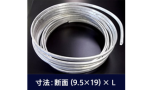

2024年
問題124 給湯設備の保守管理に関する次の記述のうち，最も不適当なものはどれか．
（1）器具のワッシャには，細菌の繁殖を防止するために合成ゴム製のものを使用する．
（2）貯湯槽に流電陽極式電気防食が施されている場合は，犠牲陽極の腐食状態を調べる．
（3）各配管に給湯水を均等に循環させるために，給湯往管に設けられている弁の開度調整を行う．
（4）貯湯槽は，定期的に底部の滞留水の排出を行う．
（5）給湯配管は，給水系統配管の管洗浄方法に準じて洗浄を行うことが望ましい．
2024年
問題124 正解（3） 頻出度AAA
給湯水を均等に循環させるための定流量弁や玉形弁は，必ず返湯管に設ける．給湯管に設けると，湯の使用ピーク時に給湯不足となる．
給湯水を循環ポンプで循環させる目的は，どこの蛇口をひねってもすぐお湯が出るように配管・湯の温度維持のためである．配管からの放熱量はわずかであるので，循環ポンプは小さな容量のもので十分であり，このような小さい容量のポンプを給湯管に設けると，給湯量によってはポンプの羽根車を強制的に回転させて壊してしまうので，循環ポンプは必ず返湯管に設置する．また，各配管に，このわずかな循環量を均等に分けるための弁を給湯管に設けると，給湯を邪魔することになるのでこちらも返湯管に設ける（2024-124-1図参照）．
-(1) 器具のワッシャに使用される天然ゴムは，レジオネラ属菌に限らず細菌の格好の栄養源となるので，合成ゴム（クロロプレン系等）のものに交換する．
-(2) 水中で異種金属をつなぐとそれぞれの金属のイオン化傾向の違いによる電位差によって異種金属接触腐食が発生するが，同じ鋼であっても，水中の酸素濃度や微量な酸の濃度は場所によって異なるため，水に接したその鋼表面のイオン化傾向は場所によって異なる．すなわち同じ水中にある鋼の表面同士で電位差が生じ，腐食電池回路が形成される（2024-124-2図参照）．
代表的な電気防食には，流電陽極式電気防食と外部電源式電気防食がある（2024-124-3図参照）．いずれも防食電流によって，防食対象をカソード化する．

流電陽極式電気防食では，配管に，配管の鋼よりも化学的に卑な（イオン化傾向が大きい＝腐食しやすい）金属，マグネシウムやアルミニウムを犠牲陽極として接続しておくと鋼の代わりに腐食され，鋼は防食される（2024-124-3図参照）．
 出典 デンボー工業株式会社 外部電源式電気防食は，不溶性電極（白金めっきを施したチタン線や炭素電極等）を陽極とし，外部電源（低圧直流電源）を用いて防食対象を保護する方法．電極の取り替えが不要（長寿命）であるが，電流密度の調整や定期的な保守が必要となる．
貯湯槽などに流電陽極式電気防食が施されている場合には，性能検査の際に犠牲陽極の状態などを調査し，必要に応じて補修，交換する．
https://www.denboh.com/product4 を基に作成